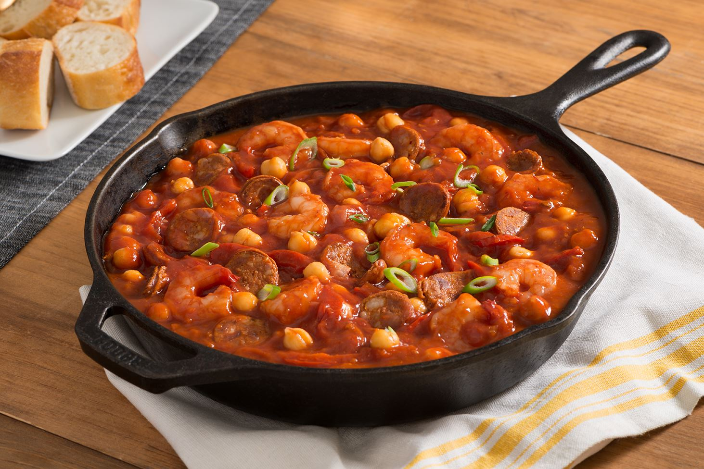

Garbanzos

This is the recipe for a garbanzo bean soup
This recipe will make you remember the same soup that your grandma used to prepare
Ingredients
- 2 Tablespoons of olive oil
- 1 Tablespoon of choped oregano
- 1 Clove of garlic
- Ground pepper to taste
- Garbanzo beans
- Half cup of sliced mushrooms
Steps
- First boil the garbanzo beans
- Add the condiments
- Fry the mushrooms
- Add them to the mix